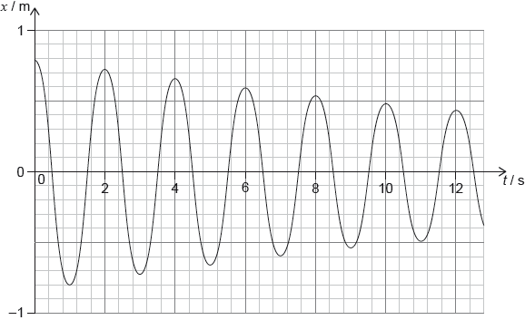

HL Paper 3
The graph below represents the variation with time t of the horizontal displacement x of a mass attached to a vertical spring.

The total mass for the oscillating system is 30 kg. For this system
Describe the motion of the spring-mass system.
[1]
a.
determine the initial energy.
[1]
b.i.
calculate the Q at the start of the motion.
[2]
b.ii.
Markscheme
damped oscillation / OWTTE
[1 mark]
a.
E «= × 30 × π2 × 0.82» = 95 «J»
Allow initial amplitude between 0.77 to 0.80, giving range between: 88 to 95 J.
[1 mark]
b.i.
ΔE = 95 – × 30 × π2 × 0.722 = 18 «J»
Q = « 2π =» 33
Accept values between 0.70 and 0.73, giving a range of ΔE between 22 and 9, giving Q between 27 and 61.
Watch for ECF from (b)(i).
[2 marks]
b.ii.
Examiners report
[N/A]
a.
[N/A]
b.i.
[N/A]
b.ii.